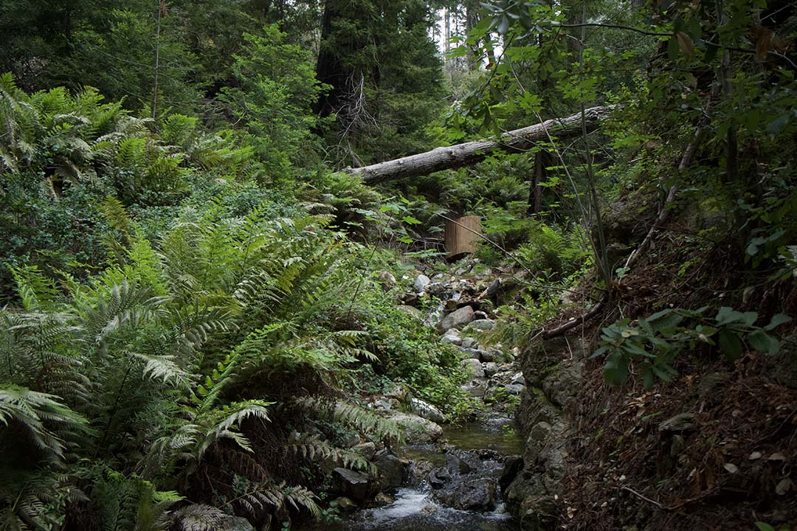
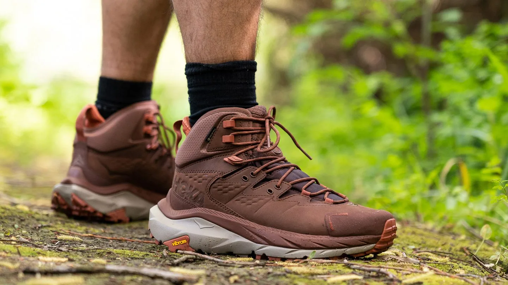

First-Time Hiking Tips: Start Your Adventure the Right Way
There's nothing quite like your first hike. The crunch of gravel beneath your boots, the scent of fresh pine in the air, and the anticipation of discovering what lies around the next corner make every step feel like an adventure. Hiking is one of the simplest and most rewarding ways to connect with nature, improve your fitness, and escape the distractions of everyday life.
Before you head out, a little preparation can go a long way. Start by choosing a trail that matches your fitness level and experience. Many parks and nature reserves offer beginner-friendly routes that provide beautiful scenery without demanding technical skills or long distances.

Comfortable, supportive footwear is another essential. While you don't need expensive gear for your first outing, sturdy hiking shoes or boots can help prevent blisters and provide better traction on uneven terrain. Don't forget to bring water, weather-appropriate clothing, and a small snack, especially if you'll be out for more than an hour.
It's also important to respect the trail and fellow hikers. Stay on marked paths, pack out any rubbish, and be mindful of wildlife. Following basic trail etiquette helps preserve natural spaces and ensures everyone can enjoy the outdoors safely.

Most importantly, take your time and enjoy the experience. Hiking isn't about speed or reaching the destination first—it's about appreciating the journey. With the right preparation and a positive mindset, your first hike could be the start of a lifelong passion for exploring the great outdoors.
